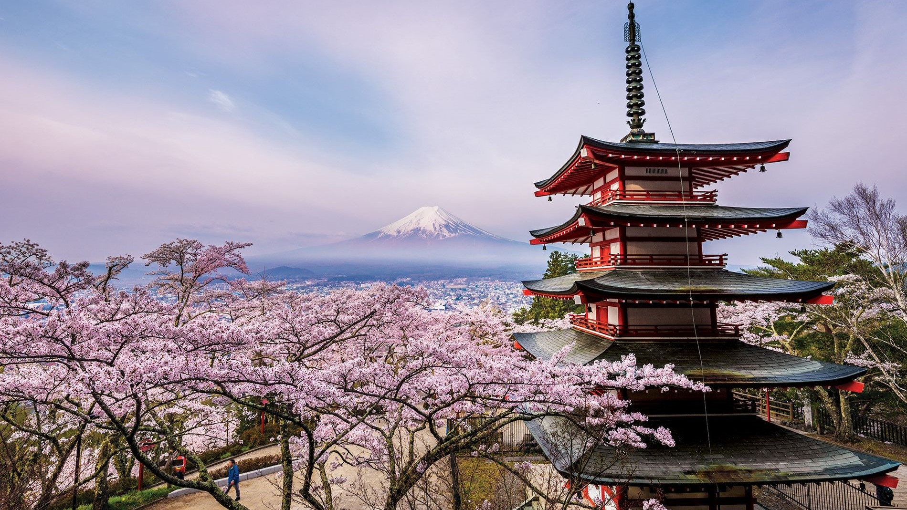

Monte Fuji, Japão

O monte Fuji é a mais alta montanha da ilha de Honshu e de todo o arquipélago japonês. É um vulcão ativo, porém de baixo risco de erupção. O monte Fuji localiza-se a oeste de Tóquio próximo da costa do oceano Pacífico da ilha de Honshu, na fronteira entre as províncias de Shizuoka e de Yamanashi.
Ver mais